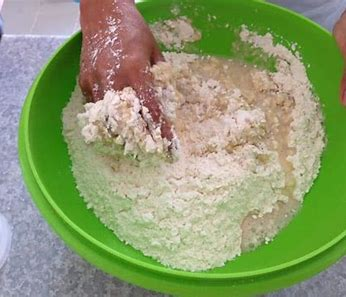
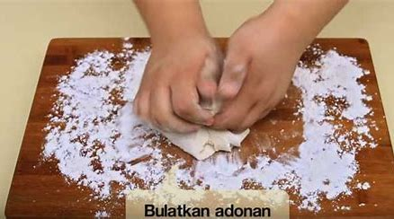

<html>
    <title>Tugas Praktikum 2</title>

</html>
    <head>

    <body>
        <br>
        <h2 align=center>Resep Kue Maryam</h2>
        <br>
        
        <h3>Bahan-bahan :</h3>
        <ul>
            <li>250 gr tepung terigu</li>
            <li>1 butir telur</li>
            <li>3 sdm margarin, lelehkan</li>
            <li>100 ml air hangat</li>
            <li>2 sdm susu bubuk (optional)</li>
            <li>1/2 sdt garam</li>
            <li>margarin leleh untuk olesan</li>
            <li>minyak untuk merendam</li>
        </ul>
        <hr>
        <h3>Langkah-Langkah</h3>
        <ol type="1">
            <li>Campur semua bahan roti maryam</li>
            
            <li>Uleni sampai kalis (aku pake tangan) jangan takut jika adonan lengket ya, lumuri tangan sesekali dg teoung (tapi jangan menambahkan tepung) uleni terus sampai adonan kalis</li>
            
            <li>Kalisnya adonan canai tidak sekalis adonan roti ya, kira² seperti ini sudah cukup</li>
            
        </ol>
    </body>
    </head>